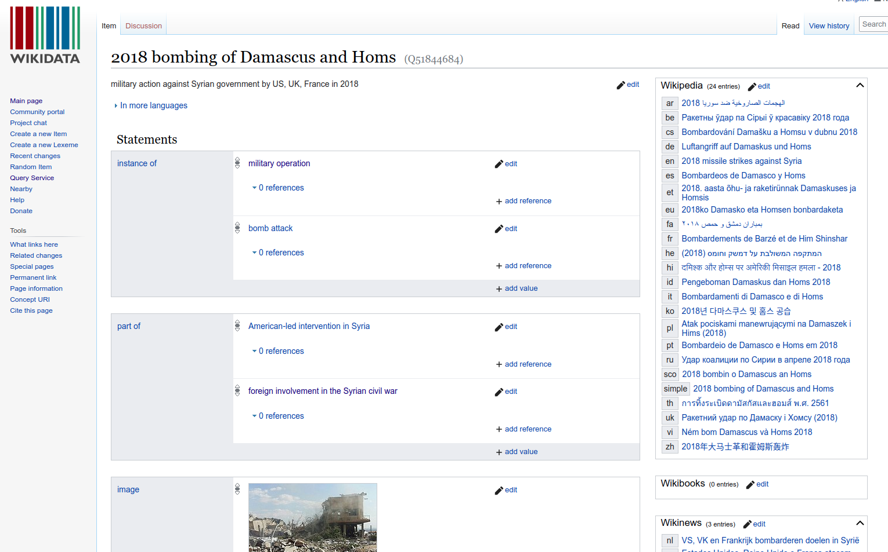
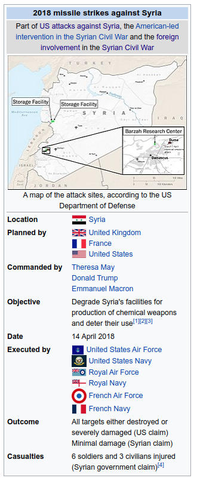
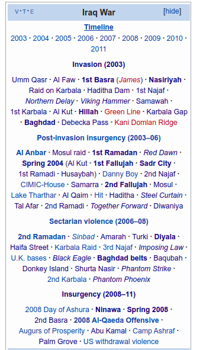

Why and how wikipedia?
Free knowledge for one and all
Created in 2007 as a way to crowd-source information, Wikipedia contains even more information than reaches the typical readers’ eyes.
Behind wikipedia are two structured Resource Description Framework (RDF) databases called wikidata and dbpedia. Each have nice properties like identifying every wikipedia page to a unique numeric ID and structuring each page’s relationship to other pages.

We scraped these two components of wikipedia for all pages on US military operations after 1989 and were able to use wikidata and dbpedia (which is based on the infoboxes at the top of each page) to create a machine-readable spreadsheet of relevant information about each event as well as the relationship between events.


The resulting MONSTr is publicly available here. Initially a proof of concept of the viability and utility of using wikipedia to automate the process of structuring data about international events, future iterations of this particular project will investigate interventions further back in time and by actors other than the United States.
For a broader project looking at wikipedia’s coverage of named entities and all types of conflict, see Douglass et al. (2022).